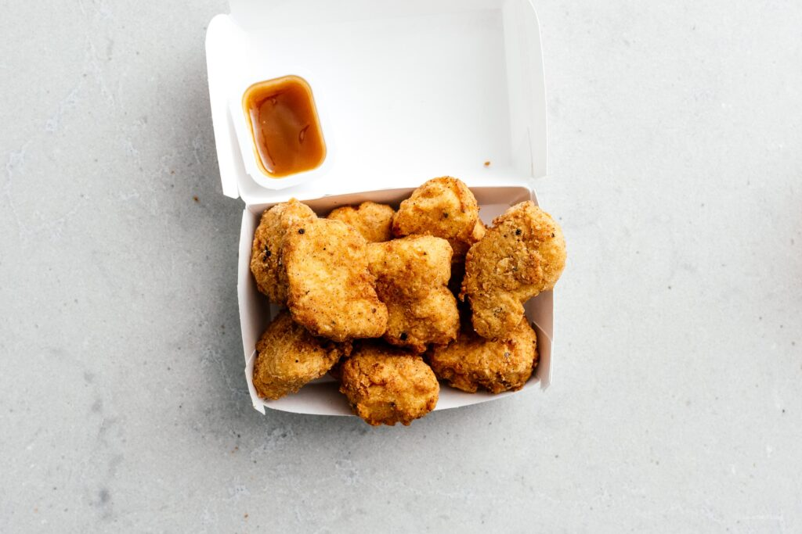

Tofu Fried Tofu Vegan Chicken Nugget Recipe

INGREDIENTS
- 14 oz Extra firm tofu
- High heat oil for deep frying such as grapeseed
INSTRUCTION
- Prep the marinated tofu: line a cutting board or baking sheet with paper towels or clean kitchen towels. Cut the tofu into 2 inch by 1 inch slabs, 1/2 inch thick. If desired, crumble the edges so they look more like nuggets. Lay out in a single layer on the prepped baking sheet and cover with towels. Gently press to extract some moisture.
- Heat up 2 tablespoons of oil in a large non-stick or cast iron skillet over high heat until shimmery. Sear the tofu, until it forms a golden brown crust, flipping once, 4-5 minutes per side. Remove and drain on a rack.
- Make the brine: in a large bowl, combine 1.5 cups water with the garlic powder, onion powder, sugar, pepper, and salt. Add the seared tofu to the brine and let marinate for minimum 1 hour and up to overnight.
- Prep the fried tofu: In a shallow bowl, mix the mayonnaise or mustard with 1/4 cup water until smooth. In another shallow bowl, whisk together the flour, spices, salt, pepper, and baking powder. Remove the tofu from the brine and pat dry. Dip the tofu in the mustard mixture, turning until coated, then dip into the flour. Dip back into the mustard, then the flour, so each nugget is twice coated.
- In a dutch oven, heat 2 inches of oil over medium high heat and prepare a wire rack on a baking sheet. When the oil reaches 350°F carefully lower the battered tofu into the hot oil and fry, flipping as needed, until golden brown, about 3-4 minutes. Transfer to the wire rack.
- Enjoy hot with sauces
GO TO RECIPEES